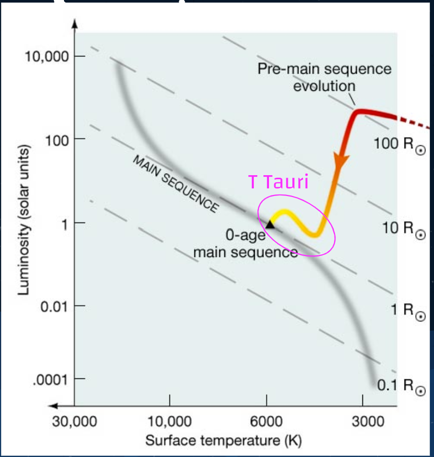
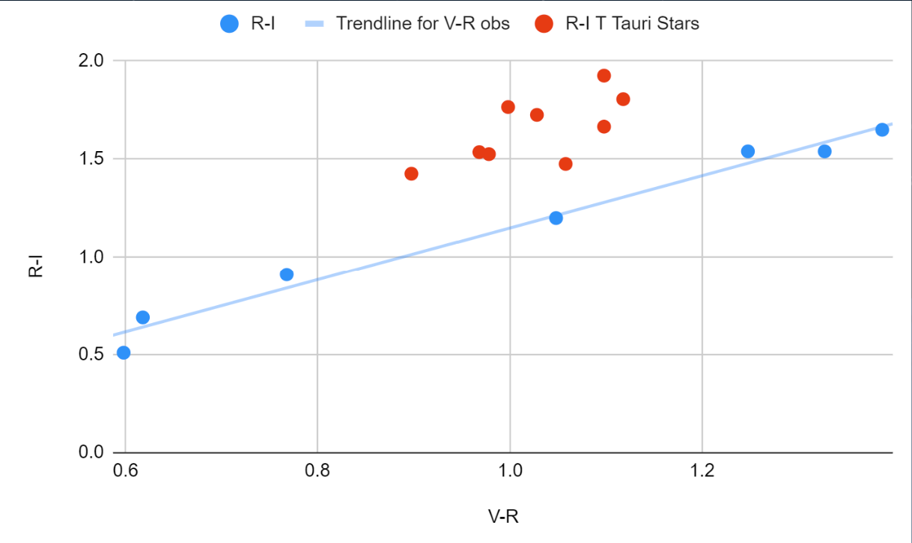

<!doctype html>
<html lang="en">

  <!doctype html>
<html lang="en">

<head>
 <meta charset="utf-8">
  <title> Background and Motivation </title>
  <link rel="icon" type="image/png" href="images/colorcompos.png">
  <meta name="description" content="Hello World">
  <meta name="author" content="Sanya Arora">
  <meta name="description" content="background">

  <meta content="text/html" http-equiv="Content-type" />
  <meta content="width=device-width, initial-scale=1" name="viewport" />

      <link href="https://fonts.googleapis.com/css2?family=Roboto&family=Ubuntu:wght@700&display=swap" rel="stylesheet">
  <link rel="stylesheet" href="https://maxcdn.bootstrapcdn.com/bootstrap/3.4.1/css/bootstrap.min.css">

   <script src="https://ajax.googleapis.com/ajax/libs/jquery/3.5.1/jquery.min.js"></script>
  <script src="https://maxcdn.bootstrapcdn.com/bootstrap/3.4.1/js/bootstrap.min.js"></script>
    <link rel="stylesheet" href="css/styles.css">

</head>


</html>
  <!doctype html>
<html lang="en">


<body>

	<nav class="navbar navbar-default">
	  <div class="container-fluid">
      <div class="navbar-header">
        <a> </a>
       </div>
      <ul class="nav navbar-nav">
        <li> <a href="#" style="color: #2e2a65; font-family: 'Ubuntu', sans-serif; font-size:20px"> ASTR 230 Final Project</a> </li>
        <li><a href ="index.html"> Home </a></li>
        <li> <a href ="about.html"> About Me</a></li>
        <li class="dropdown">
          <a class="dropdown-toggle" data-toggle="dropdown" href="#">Project Info
          <span class="caret"></span></a>
          <ul class="dropdown-menu">


            <li><a href=backround.html>Background and Motivation</a></li>

	          <li><a href=data.html> Data Collection Methods </a></li>

	          <li><a href=results.html>Results and Conclusions</a></li>


	        </ul>
	      </li>
	    </ul>
	  </div>
	</nav>


</body>
</html>

<body>

  <h2> Background and Motivation </h2>
      <div class = "container-fluid">
        <div class ="col-lg-12">
          <div class="jumbotron vertical-center" style="background-color: #f2e6dc">
            <p class="text"> T Tauri stars are a class of pre-main-sequence stars, lying between protostars and main sequence stars in the stages of evolution.
              They are relatively young stars that are still in the process of contracting and settling into a stable state of fusion, which will eventually make them main-sequence stars.
              A depiction of the location of T Tauri stars in the Hertzsprung-Russell diagram is shown below: <br> </p>
              <figure>
                  </img>
                <figcaption class="text"> A plot from the Pennsylvania State University website. We can see that on the HR diagram, T Tauri stars lie just below where they will end up on the main sequence. </figcaption>
              </figure>

              <p class="text"> Due to the accreting disk surrounding T Tauri stars, they emit both a blue photometric excess that is detectable in the Johnson-Cousins
                V band filter. By plotting color-color diagrams of stars in a nebula, we can identify T Tauri stars by their photometric excess. <br> </p>
                <figure>
                    </img>
                  <figcaption class="text"> A preliminary color-color diagram I made from color magnitudes of standard stars to find out if my project was feasible.
                  As is clearly visible from this plot, T Tauri stars (red) exhibit a photometric excess in the V band that puts them above and to the left of
                main sequence stars (blue). </figcaption>
                </figure>
                <p class="text"> For my project, I wanted to identify T Tauri stars using a color-color diagram similar to the one shown above, plot where they are located spatially
                  inside the nebula, and see if I could find evidence of spatial segregation between T Tauri stars and main sequence stars. <br> </p>


      </div>
    </div>
  </div>

<footer>
<html>

<div class ="footer">
  <p> Year of Creation: 2020, License Statement: No Cemmerical Use, Authorship Attribution: Sanya Arora </p>
</div>
</html>
</footer>
</body>

</html>
